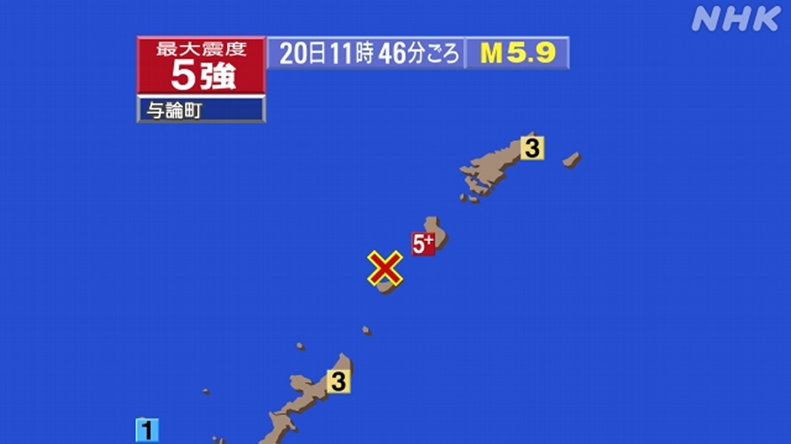
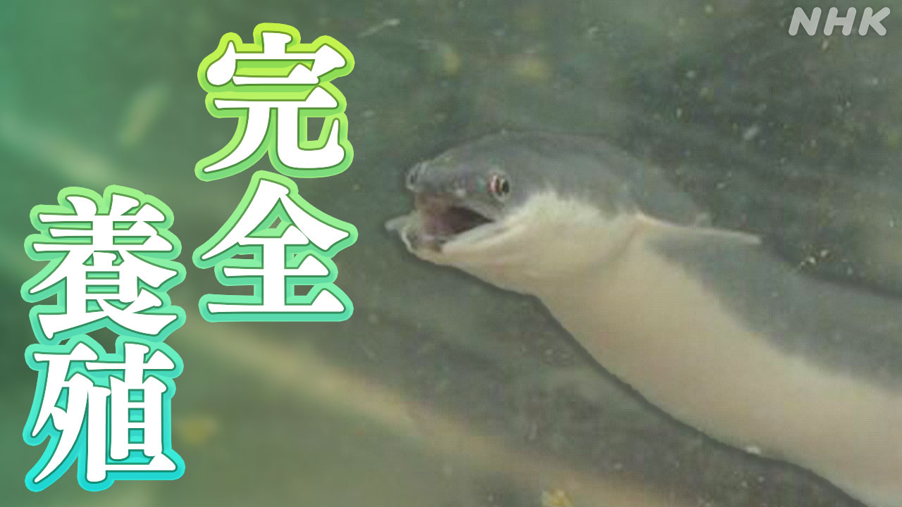

最新ニュース
1️⃣ 習近平国家主席とプーチン大統領が会って話をした
20日、中国の習近平国家主席とロシアのプーチン大統領が、北京で会って話をしました。
中国の新華社通信によると、習主席は「世界では今、強い国が力で思うとおりにしようとしている」と言いました。そして、イランで起こっていることについて「戦いがまた始まってはいけない。話し合いを続けることが大切だ」と言いました。
プーチン大統領は「中国とロシアは今までにないぐらいよい関係だ」と言いました。そして「今、イランから石油が入りにくくなっているが、ロシアは中国にたくさんの石油などを輸出して役に立っている」と言いました。
2️⃣ 鹿児島県の奄美地方で強い地震があった

20日の午前11時46分ごろ、鹿児島県の奄美地方で強い地震がありました。
いちばん強く揺れたのは鹿児島県の与論島で、震度5強でした。このほか鹿児島県と沖縄県のいろいろな所で揺れました。津波はありませんでした。
気象庁は「強く揺れた所では、1週間ぐらいの間、同じぐらい強い地震があるかもしれません。高いところから石などが落ちてくる心配もあります。このあとの地震や雨の降り方に気をつけてください」と話しています。
3️⃣ 卵から育てたうなぎを初めて売る

日本人はうなぎをよく食べます。夏に食べると元気が出るからです。
しかし川などでとれるうなぎは少なくなっています。
大分県にある会社は、4年前からうなぎを卵から育ててきました。
卵からこどもの大きさに育てるまでがとても難しくて、最初はすぐに死んでしまいました。
やっと大きく育てることができるようになって、5月初めて卵から育てたうなぎを売ります。値段は1匹5000円ぐらいです。
会社の人は「おいしいです。これからもっと安くして、たくさんの人に食べてもらえるようにしたいです」と話しています。
4️⃣ LGBTQの人「着たい服を着ることができない」
ファッションに関係する会社が、LGBTQの人たち500人にアンケートを行いました。
LGBTQは、心と体の性が同じではないと感じる人などのことです。
アンケートでは「着たい服を着ることができない」と答えた人が半分近くいました。
「周りの目が気になって買うことができなかった」という人も半分以上いました。
若い人からはサイズや形が自分に合わないという意見が多くありました。
アンケートをした会社は「LGBTQの人たちの意見を他の会社にも伝えていきたい」と話しています。
- 〜としている
- 〜によると
- 〜として
- 〜ている / 〜でいる
- 〜いけない
- 〜こと
- 〜について
- 〜まで
- 〜くらい / 〜ぐらい
- 〜までに
- 〜など
- 〜から
- 〜にくい
- 〜がある / 〜がいる
- 〜ごろ
- 〜ところ
- 〜かもしれない / 〜かもしれません
- 〜てください / 〜でください
- 〜方
- 〜後 / 〜あと
- 〜てしまう
- 〜から〜まで
- 〜ても / 〜でも
- 〜ようになる
- 〜ことができる
- 〜になる
- 〜ように
- 〜てもらう / 〜でもらう
- 〜ようにする
- 〜以上
- 〜という
vebaev.github.io
Generated: 2026-05-20 13:40:06 UTC